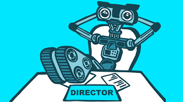

A la hora de decidir si automatizamos o no un proceso industrial, o si esta automatización será parcial o total, debemos tener en cuenta diferentes factores. Esto es especialmente crítico cuando no se trata de una empresa de gran tamaño, ya que el impacto de las decisiones se hace notar más.
Aunque cada empresa es diferente y tiene sus particularidades, los procesos industriales se pueden adaptar a cada una para cumplir con el mínimo detalle las especificaciones técnicas.
| Ventajas | Desventajas |
|
lo que permite producir de forma ininterrumpida con una disponibilidad 24 h. Esta ventaja es especialmente interesante en empresas con una marcada estacionalidad en la producción, que presenta incrementos muy marcados. elevado que en un proceso manual. Las medidas, pesos o mezclas se calculan con la mínima unidad. Además, no se producen tiempos muertos ni interrupciones por errores o cambios en el proceso. el tiempo de producción. grandes pesos, temperaturas elevadas o entornos peligrosos (con productos químicos nocivos, radioactivos…). |
 |
(c) Todos los derechos reservados Diseñado por Katherine Ballesteros - 2021